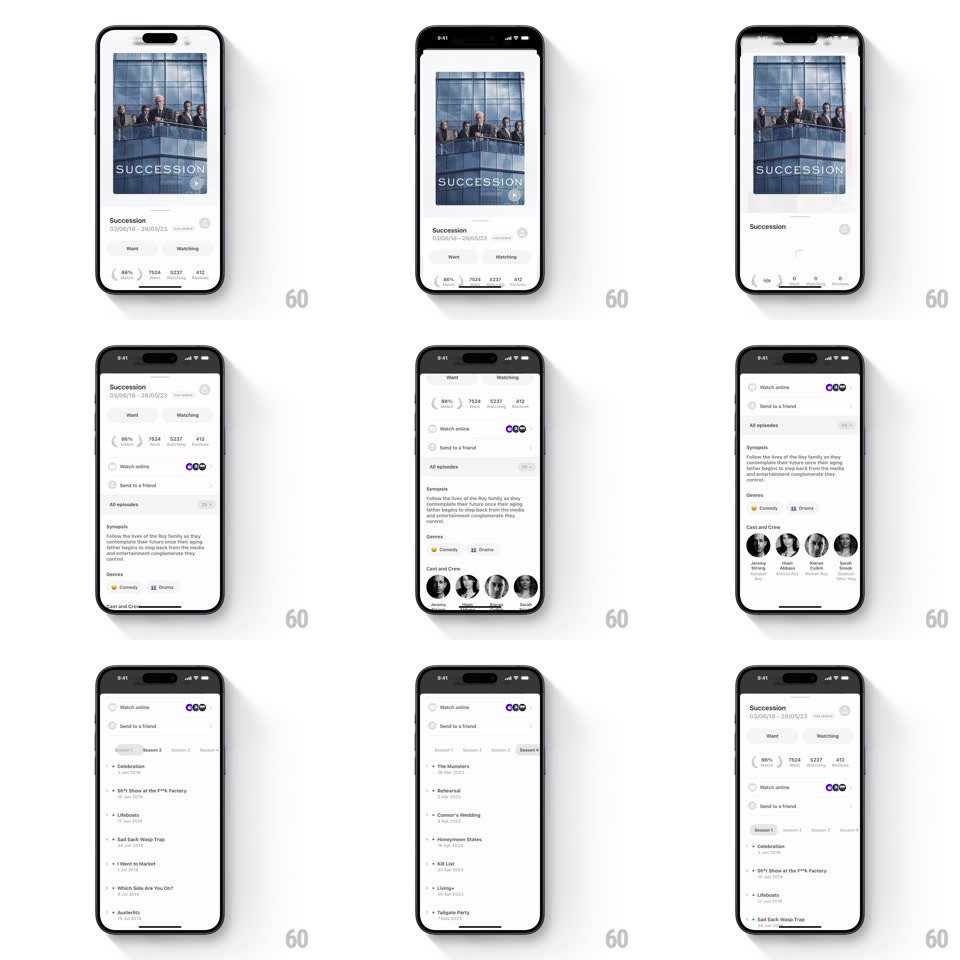

Media
Frame-by-frame

Rebuild this interaction 1:1: Must's movie detail transition - tap a poster in the grid and it springs open into a full detail sheet, hero image stretching to fill the width.

Rebuild this interaction 1:1: Must's movie detail transition - tap a poster in the grid and it springs open into a full detail sheet, hero image stretching to fill the width.
## Integration
Integration: stack-agnostic spec - springs given as stiffness/damping, timed motions as duration + curve; map every value to your framework and animation library of choice.
## Scene
A winners grid ("Emmys 2024: Full list of winners", 2-column poster grid). Tapping a poster opens the title's detail sheet: the poster becomes a wide hero image, then title, date range, a Want / Watching segmented control, and a row of stat chips (rating %, counts).
## Motion spec
Pattern: shared-element card-to-sheet expansion.
- Tap a poster: the poster lifts from the grid (shadow deepens, 100ms) and expands - its bounds animate from the grid cell to the full-width hero slot (spring ~340/24, ~500ms), corner radius easing from 12px to 0 at the top edges.
- The grid behind dims and scales down slightly (scale 0.97, black scrim to 30%) as the sheet rises to meet the hero image from below (spring ~380/28).
- Detail content staggers in once the hero lands: title block (translateY 12px + fade, 220ms), segmented control (180ms, 70ms later), stat chips popping one by one (scale 0.8 to 1, spring ~420/20, 50ms apart).
- Inside the sheet: scrolling is rubber-banded; sections expand accordion-style (height animation 250ms, chevron rotates 180deg); the segmented control slides its pill (200ms spring) and swaps the list with a crossfade.
- Dismiss (drag down or tap close): the hero image shrinks back into its grid cell along the same path, content fading out first (150ms), grid undimming as the poster lands.
## Calibration
- The poster's aspect must be preserved through the expansion - crop to fill the hero slot, never stretch.
- The return animation must land exactly in the grid cell, even if the grid scrolled.
## Reduced motion
Crossfade from grid to detail page.
## Don't miss
- The hero image bleeds to the screen's top edge (under the status bar) while the sheet body keeps margins.
- Stat chips are monochrome pills - the rating chip leads and is the only emphasized one.